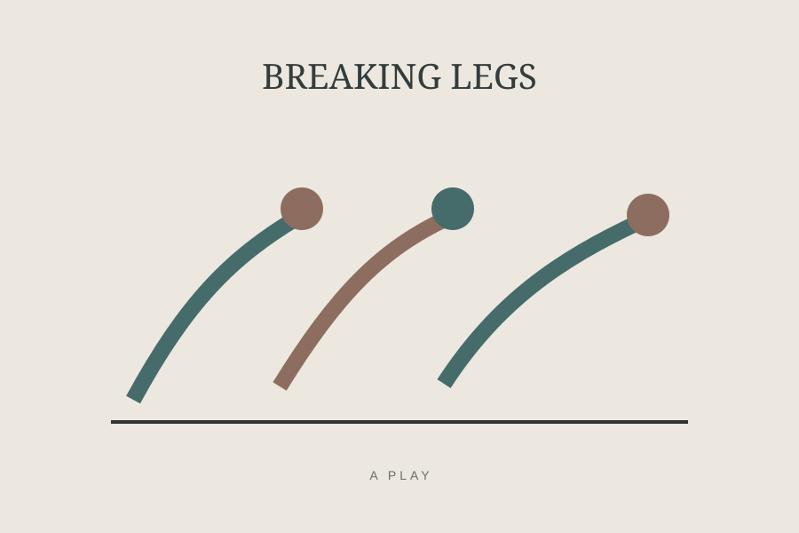
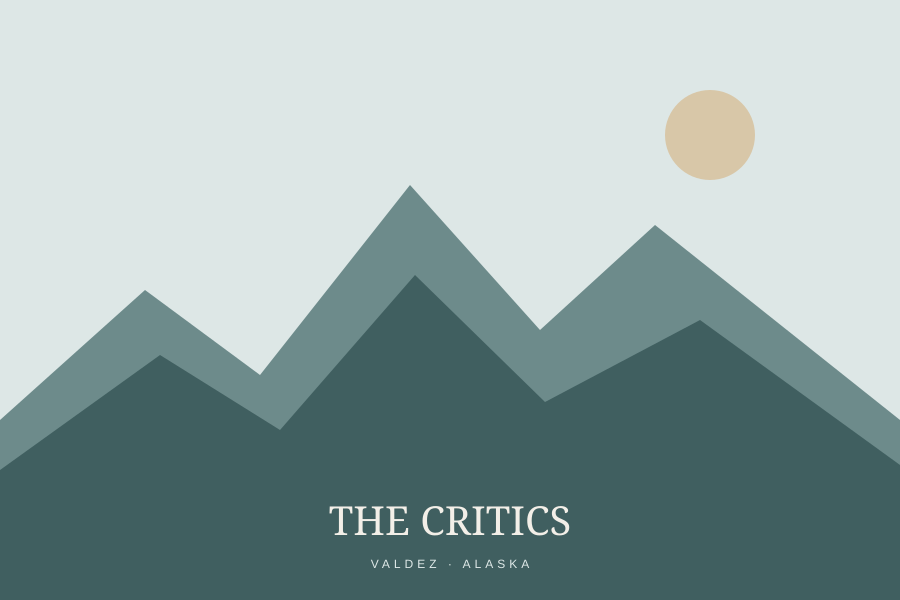
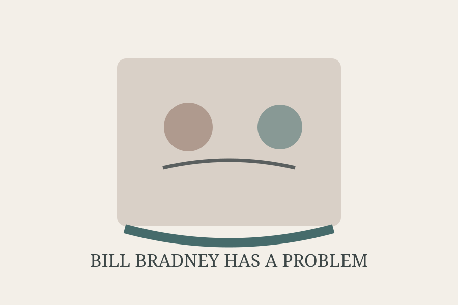

Short play2020 · Another Chicago Magazine
Breaking Legs
A short play published in Another Chicago Magazine in 2020.
THEATRE
Short plays written for publication, performance, and the peculiar space where theatre becomes literary comedy.

A short play published in Another Chicago Magazine in 2020.

A play presented in the Last Frontier Theatre Conference / Play Lab in Valdez, Alaska. The official Valdez history page lists the play under 2014.

A short play built around the same absurd comic premise: a man seeks psychiatric help for the stress caused by paying for psychiatric help. The 2026 publication identifies it as a short play.
The Critics: the date here is intentionally given as 2014, following the official Valdez / Prince William Sound College archive.